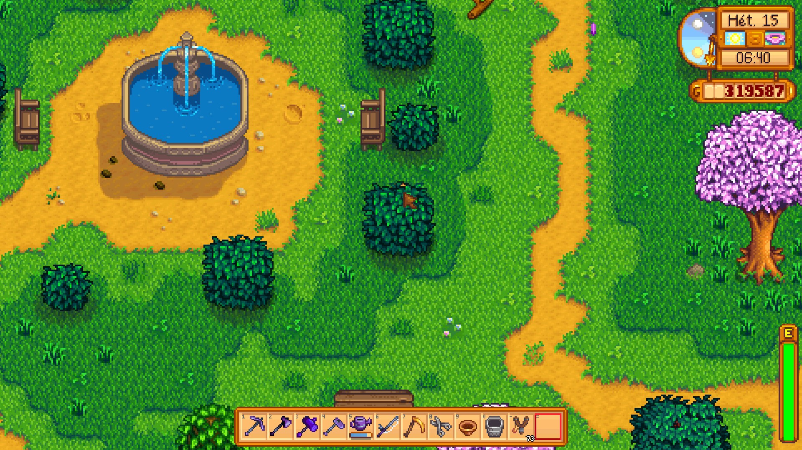

Üdvözöl a Stardew Valley rajongói oldal!
Fedezd fel a Stardew Valley világát, ismerd meg az évszakok szerint változó kihívásokat és kalandokat!

Fedezd fel a Stardew Valley világát, ismerd meg az évszakok szerint változó kihívásokat és kalandokat!